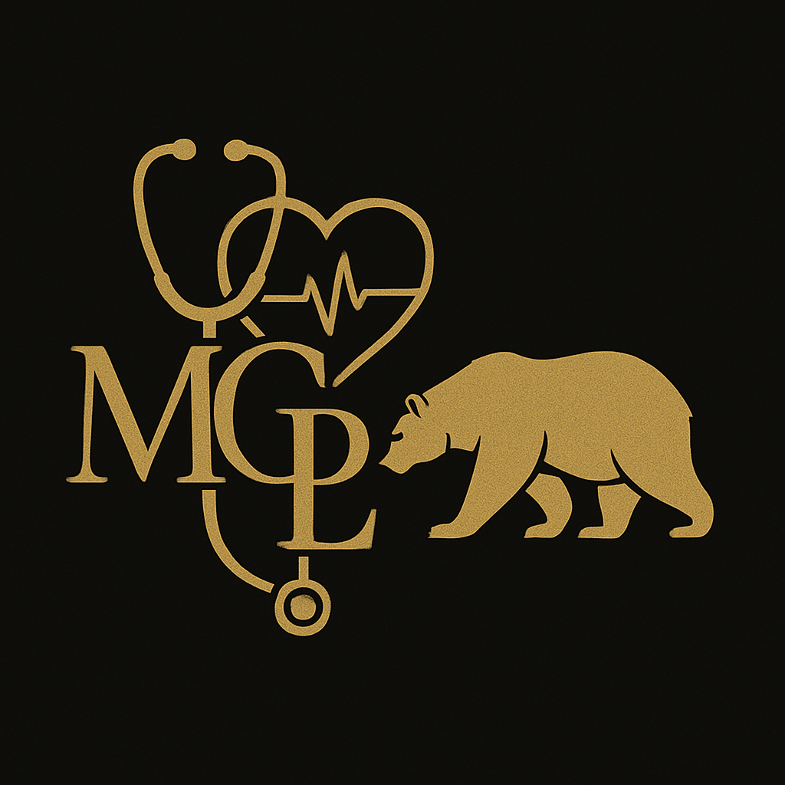

MGPL - Michał Grobelak Praktyka Lekarska
MGPL - to firma medyczna założona listopadzie 2015 roku przez lekarza Michała Grobelaka,
zajmująca się działalnością leczniczą (aktualnie w formie indywidualnej specjalistycznejpraktyki lekarskiej).
Założona aby świadczyć usługi medyczne najwyższej jakości. Już 10 lat na Rynku Zdrowia, świadcząca
usługi medyczne zabezpieczające funkcjonowanie oddziałów szpitalnych t.j. SOR, Oddział
Wewnętrzny, Kardiologiczny. Z czasem, działalność została ukierunkowana na udzielanie
świadczeń głównie z zakresu Kardiologii, zarówno w ambulatorium
takie jak poradnia kardiologiczna oraz wykonywanie badań ambulatoryjnych m.in Echa serca tzw. UKG, testów wysiłkowych na cykloergomerze i bieżni, Holterów EKG i ABPM ale także prowadzenie kardiologicznych turnusów rehabiliracyjnych w Ośrodku Dziennym Rehabilitacji Kardiologicznej.
Aktualnie kardiologiczna to dominująca część działalności (wybieram głównie takie oferty współplracy).
Poza prowadzeniem od 11.2015r firmy medycznej MGPL(Michał Grobelak Praktyka Lekarska), prodzadzę takżę działalność dydaktyczną w Uniwersytecie Jana Długosza Collegium Medicum kształcząc przyszłych pracowników ochrony zdrowia.

Wykształcenie:
2003-2006r Liceum ogólnokształcące im. Romualda Traugutta w Częstochowie.
2006 - 2012r Studia: Śląski Uniwersytet Medyczny w Katowicach, kierunek lekarski.
05.09.2022r Uzyskanie tytułu specjalisty w dziedzinie kardiologii.
Doświadczenie zawodowe:
01.10.2012-31.10.2013r Praca w Wojewódzkim Szpitalu Specjalistycznym w Częstochowie im. NMP na stanowisku stażysta.
02.01.2014-31.01.2016r Kontynuacja pracy w WSzS im NMP w Częstochowie na Szpitalnym Oddziale Ratunkowym - młodszy asystent.
01.02.2016-17.02.2022r Kontynuacja pracy w WSzS im NMP w Częstochowie - rezydentura z kardiologii (Oddział Chorób Wewnętrznych i Intensywnego Nadzoru Kardiologicznego Al. Pokoju 44 następnie przekształcony na Oddział Chorób Wewnętrznych i Nadciśnienia Tętniczego przy ul. PCK7).
18.02.2022- 30.09.2022r Kontynuacja pracy w WSzS im NMP w Częstochowie ul. PCK7.w Oddziale Chorób Wewnętrznych i Nadciśnienia Tętniczego -młodszy asystent.
- obecnie dalej dyżuruję w w/w Oddziale.
01.10.2022r-31.01.2025r Kontynuacja pracy WszS im NMP w Częstochowie ul. PCK7.w Oddziale Rehabilitacji Kardiologicznej - starszy asystent.
Obecnie
Od 11.2015r Działalność gospodarcza: JDG pod nazwą MGPL, działalność lecznicza w formie indywidualnej specjalistycznej praktyki lekarskiej.
Od 03.2024r Kierownik w Dziennym Ośrodku Rehabilitacji Kardiologicznej „Zdrowie” Częstochowa ul. Batalionów Chłopskich 117.
Od 06.2024r Przyszpitalna poradnia kardiologiczna Miejskiego Szpitala Zespolonego w Częstochowie ul. Mirowska 15.
Od 03.2025r Oddział Kardiologii Bełchatów ul. Czapliniecka 123.
Od 03.2025r Uniwersytet Jana Długosza Collegium Medicum -wykładowca, współpracownik dydaktyczny.
Wykonywane badania: analiza EKG, Holtery EKG, RR, Holter ABPM, HBPM, Echokardiografia przezklatkowa TTE, Testy wysiłkowe na bieżni lub cykloergomerze
KONTAKT